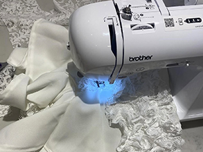
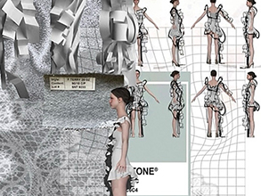
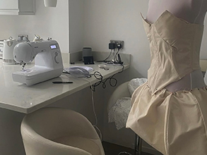

Fashion has always been more than clothing for Isabelle Grace Wright — it is a form of creativity, confidence, and personal expression. As a talented young designer and graduate from Manchester Metropolitan University, Isabelle has developed a reputation for producing bespoke designs that are carefully crafted to complement each individual client. Her work focuses on creating garments that not only look beautiful but fit flawlessly, combining style with comfort and confidence. Specialising in both fashion design and professional alterations, Isabelle brings a versatile skill set to every project. From designing original catwalk pieces to transforming and tailoring existing garments, she has the ability to turn ideas into wearable works of art. Her experience creating designs for fashion catwalks highlights her creative vision, technical ability, and passion for innovation within the fashion world. Isabelle’s attention to detail, eye for silhouette, and understanding of fabrics allow her to produce pieces that feel both contemporary and timeless.
Driven by ambition and creativity, Isabelle continues to grow as a designer, building a brand centred around individuality, elegance, and craftsmanship. With a strong foundation, fresh perspective, and undeniable talent, she is quickly becoming a name to watch in the future of fashion.
“Every design should tell a story and make the wearer feel confident, unique, and empowered.”
Find your natural waistline (narrowest part)
Stand relaxed, don't hold your breath
Wrap tape around your waist
Keep tape snug but not tight
Measure after exhaling normally.
Stand with feet together
Find the fullest part of your hips
Wrap tape around hips and buttocks
Keep tape parallel to the floor
Ensure tape is not twisted
Wear a well-fitting bra (for women)
Stand straight with arms at your sides
Measure around the fullest part of your chest
Keep tape parallel to the floor
Don't pull too tight - tape should rest lightly on skin

Using advanced machinery, specialized templates, and precise hand manipulation to achieve flawless, consistent stitches. Whether you are quilting, garment-making, achieving a straight seam and an exact needle drop point requires the right tools and techniques.

Preparation involves translating creative inspiration into a functional, manufacturable garment. It requires thorough research, precise technical communication, proper fabric selection, and understanding how 2D sketches map onto a 3D body.

An alterations specialist is an expert tailor/seamstress focused on restyling, resizing, and repairing garments. While general tailors handle basic clothing, specialists have expertise in complex designs like bridal gowns, suits, and delicate fabrics.